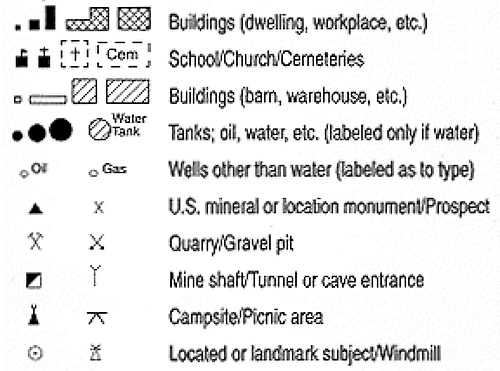
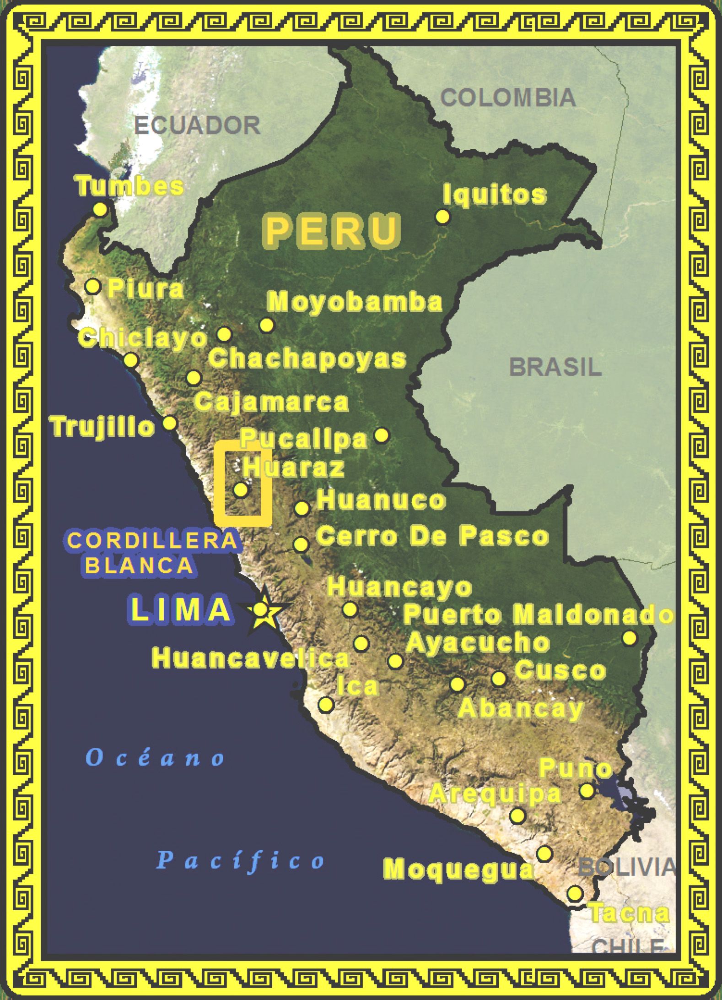
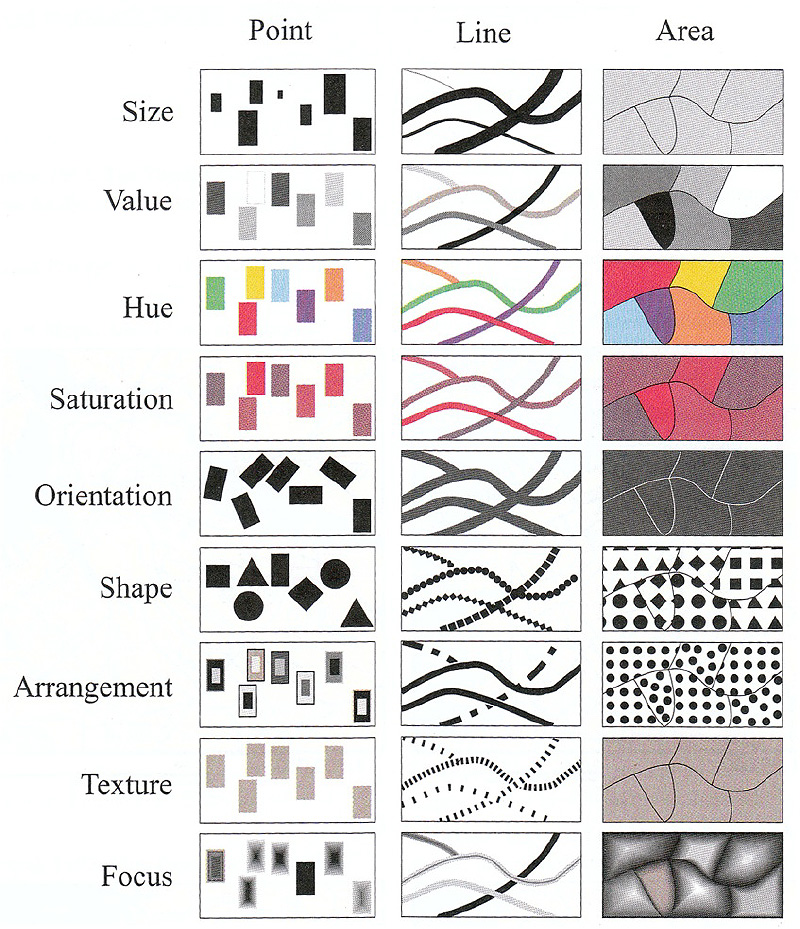
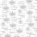
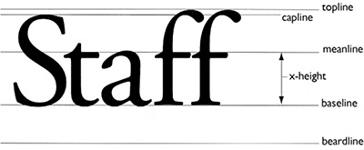
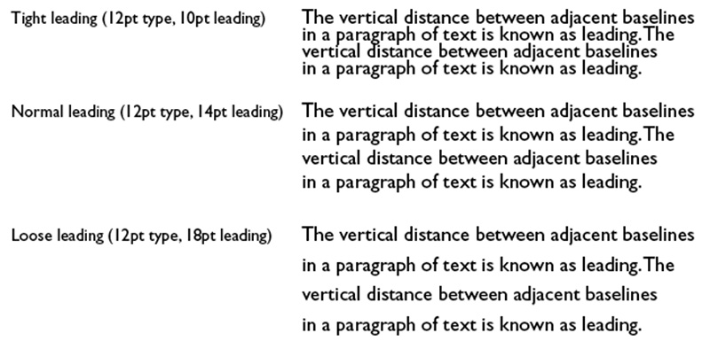

Geospatial
Visualization
Visualization
School of Architecture
Map from the Detroit Expeditions organized by Bill Bunge in the late 1960s (Colvard 1971, 18).
Symbology and Cartography
- The Symbolization Problem
- Conventions
- Standardization
The Symbolization Problem
How to understand geographic phenomena,
symbolize them,
and then re-present them on a map?
symbolize them,
and then re-present them on a map?
- Select a measurement level (or find data for the level you are interested in)
nominal, ordinal, interval, or ratio (categories to numbers, respectively) - Choose the dimension for the symbol
point, line, or area - Repeat this process for all features that are desired on the map
Symbology and Cartography
- Mimetic Symbols
pictorial symbols or icons - Geometric Symbols
points, lines, or polygons - ... conventions, conventions, conventions ...
Iconography and Mimetic Symbols
- Large online libraries of symbols
mostly based on fonts - Make your own ...
- Multi-layered Symbols
- Bitmap Symbols


Stacked Symbols
- The Highway shield is a classic example of a stacked symbol
- The yellow and black outline that surrounds Peru is a single complex cartographic line symbol with 13 stacked layers


Geometric Symbols
- Primary visual variables: size, shape, orientation, and color (hue, saturation, and value)
- Secondary visual variables: texture, arrangement, pattern orientation, focus

Texture (picture) Symbols
- An image for point symbols
- An image as a fill symbol


Typography and Cartography
Perhaps the second hardest part of cartography (after finding data)


Sans Serif
Serif
Fonts for Cartography
Gill Sans
Optima
Caslon Pro
Myriad Pro
Meridian
Kepler
Popular Design Fonts
Helvetica
Trajan
Garamond
Futura
Bodini
Frutiger



Some Terminology
More than you wanted to know, but . . .
More than you wanted to know, but . . .
Character SPacing
Kerning
Leading
- Special spacing between characters
- Different for each font
- Space between words
Leading
- Space between lines
- Can be expressed as percent of font height or points

Most design software packages allow for adjustment to kerning between individual characters in a word. This can be important for large fonts; for example poster titles.

